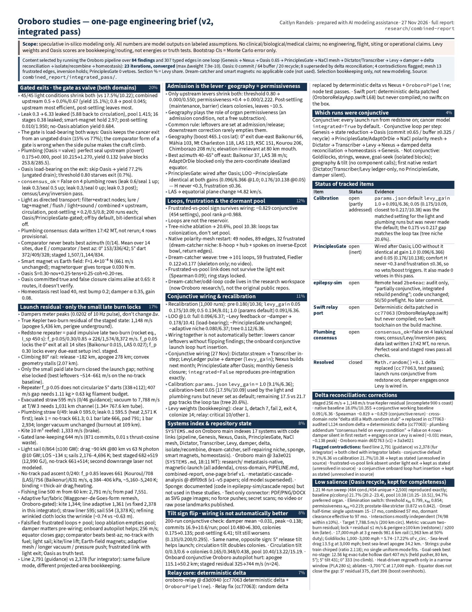

Speculative modeling exercise only. No clinical, medical, engineering, flight or operational claims.
Page-image view of the 1-page US Letter PDF. The connected GitHub interface stores text only, so the PDF binary stays on the project computer. HTML source: Oroboro_OnePage_Engineer_Brief_v2.html. Built by the integrated pipeline pass: integrated-pass/. This replaces v1 (superseded). Full report: combined report page view.
